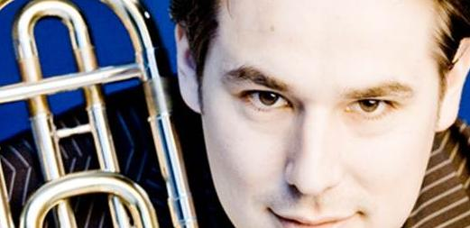

Quadrivium |
|||||||||||
|
|||||||||||
Organisatie |
|||||||||||
|
|||||||||||
Activiteiten |
|||||||||||
|
|||||||||||
voor Leden |
|||||||||||
|
|||||||||||
Contact |
|||||||||||
|
|||||||||||
Concert Verrassende Ontmoetingen
Muzikale activiteit

zondag 27 maart 2011: Concert Verrassende Ontmoetingen
Op zondagmiddag 27 maart vindt het concert van Auletes plaats in de ambitieuze concertserie Verrassende Ontmoetingen, in de concertzaal in Tilburg. Het concert betreft een Verrassende Ontmoeting tussen een wereldkampioen, twee solisten van wereldniveau en een wereldpremière. Harmonieorkest Auletes brengt in samenwerking met Gemengd koor Vokollage onder leiding van Jos Schroevers de wereldpremière van Symfonie nr. 3 van Marc van Delft ten gehore. Dit werk behandelt de vier elementen en koppelt deze aan muziek uit vier specifieke perioden van de muziekgeschiedenis. Auletes begeleidt daarnaast concertgebouwtrombonist Jörgen van Rijen in het werk Rapsodia Borealis. Dit zeer lastige solowerk voor trombone is voor Van Rijen een appeltje naar zijn hand. De afwisseling van technische passages en lyrische melodieuze lijnen laten het instrument in haar volle glorie schitteren.
De Belgische acteur Hubert Damen, bekend van de tv-serie Witse op de Belgische televisie, vertelt het verhaal van Kapitein AHAB die met zijn schip Moby Dick achterna zat. Stephen Melillo zette dit verhaal op muziek met een aparte rol voor verteller. Hubert Damen wordt begeleid door Fanfare Kempenbloei, het orkest dat in 2009 het Wereld Muziek Concours (WMC) won in de afdeling fanfare. Dit veelgeroemde orkest liet tijdens eerdere concerten in de concertserie ook al een verpletterende indruk achter en zal dit zeker weer gaan doen. Het orkest wordt geleid door dirigent Ivan Meylemans. Verrassend is de ontmoeting voor Meylemans met zijn trombone collega Van Rijen; samen zijn zij als trombonist aan het Koninklijk concertgebouworkest verbonden.
Naast het werk van Melillo, brengt Kempenbloei Achel ook het werk Into the Light van Philip Wilby. Dit werk werd geschreven voor de Cory Band uit Wales; een van de topbrassbands van de wereld. Bij dit werk worden de technische capaciteiten van de spelers flink op de proef gesteld. De Symphonic dances uit West Side Story behoeven geen uitleg. De bekende melodieën uit de musical werden geschreven door Leonard Bernstein. Kempenbloei Achel eindigt het concert met de mars Albastum van de Belgische componist Stijn Roels.

Gespeelde muziek
| Onderverenigingen: | Auletes, Vokollage |
|---|---|
| Begintijd: | 14:30 uur |
| Website voor meer info: | http://www.verrassendeontmoetingen.nl/index.php/concerten/14-2011-27-mrt-full |